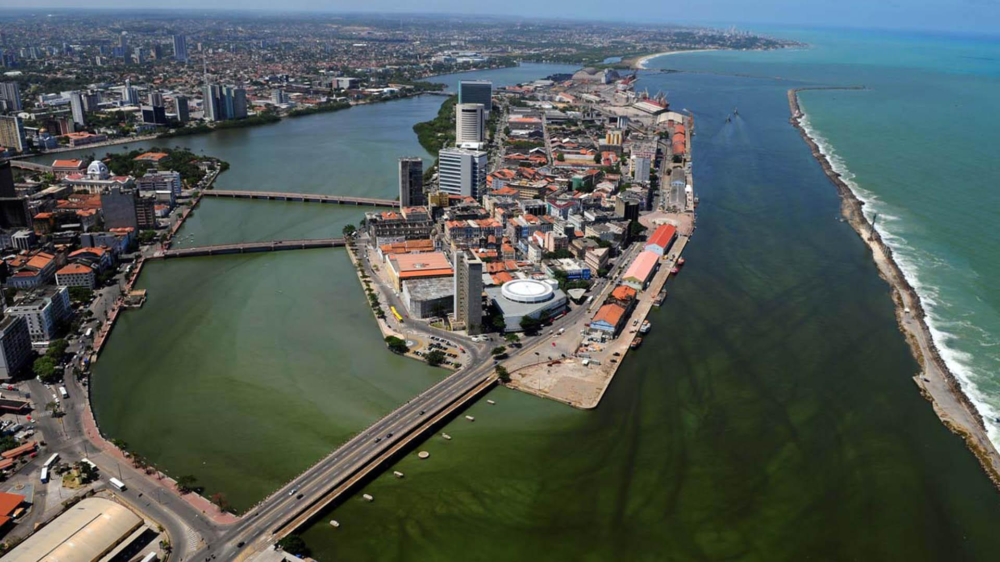
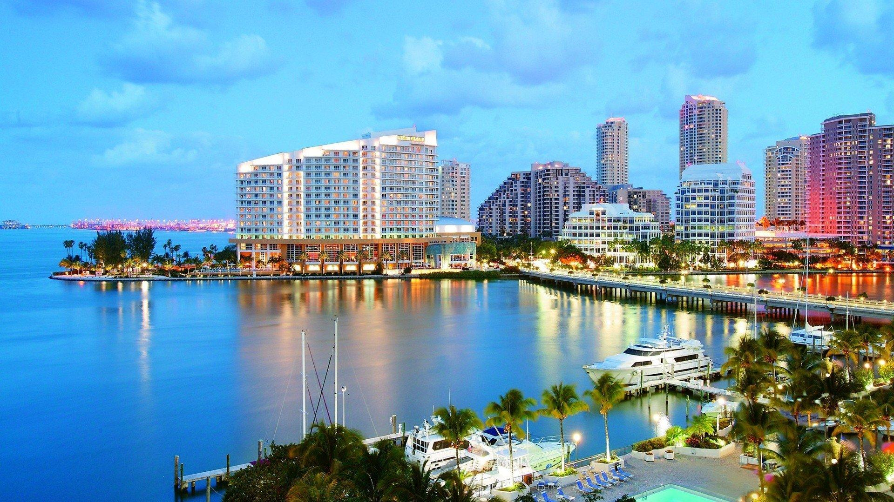

This page explains why some Brazilian cities are popular tourist destinations.
Each city offers unique landmarks, culture, and natural attractions.
Why visit those cities?
- Rio de Janeiro
- Iconic landmarks such as Christ the Redeemer
- Famous beaches like Copacabana and Ipanema
- São Paulo
- Largest city in Brazil with great nightlife
- Cultural attractions like museums and theaters
- Recife
- Beautiful beaches and warm weather
- Rich history and colonial architecture

- Florianópolis
- Known for its many beaches and surfing spots
- High quality of life and nature attractions

- Fernando De Noronha
- Crystal-clear waters and marine life
- One of the best places for snorkeling and diving